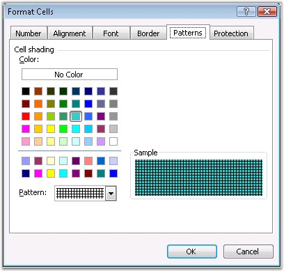
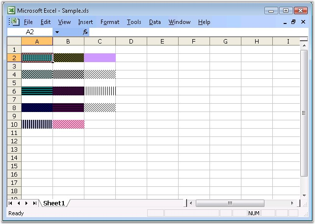

This section illustrates the fill settings available in Excel.
Color
MS Excel provides support to format its cells, rows, and columns with various colors and patterns. This can be done by using the Fill Color button and an associated palette.

Figure 42: Format Cells Dialog Box
A color is a 4-byte number of the format 00BBGGRR, where RR, GG, and BB values are the Red, Green, and Blue values, each of which is between 0 and 255 (&HFF). If all component values are 0, the RGB color is 0, which is black. If all component values are 255 (&HFF), the RGB color is 16,777, 215 (&H00FFFFF), or white. All other color combinations of values for the red, green, and blue components.
Color Pallet
Excel supports colors for fonts and background fills through what is called the Color Pallet. The Pallet is an array or series of 56 RGB colors. The value of each of those 56 colors may be any of the 16 million available colors, but the Pallet, and thus the number of distinct colors in a workbook, is limited to 56 colors. The RGB values in the Pallet are accessed by the ColorIndex property. The ColorIndex is an offset or index in the Pallet, and thus has a value between 1 and 56. In the default, unmodified Pallet, the 3rd element in the Pallet is the RGB value 255 (&HFF), which is red.
When you format a cell's background to red, for example, you are actually assigning to the ColorIndex property of the Interior a value of 3. Excel reads the 3 in the ColorIndex property, and goes to the 3rd element of the Pallet to get the actual RGB color. If you modify the Pallet, say by changing the 3rd element from red (255 = &HFF) to blue (16,711,680 = &HFF0000), all items that were once red are changed to blue. This is because the value of the 3rd element in the Pallet has been changed from red to blue, while the ColorIndex property remains equal to 3.
You can change the values in the default pallet by modifying the Colors array of the workbook. You can also get the colors in the palette by using the Palette property.
Colors in XlsIO
XlsIO provides support for adding new colors to the color palette that are not available in the standard MS Excel color palette, by using the SetPaletteColor method. If you have modified as workbook's Pallet, you can reset the pallet back to the default values, by using the ResetPalette method.
The following code example illustrates how to set the color palette.
|
[C#]
// Creating color palette. string[] known = Enum.GetNames( typeof( KnownColor ) ); Color[] palette = workbook.Palette;
for( int i = ( int )ExcelKnownColors.Custom0; i < palette.Length; i++ ) { KnownColor value = ( KnownColor )Enum.Parse( typeof( KnownColor ), known[i] ); workbook.SetPaletteColor( i, Color.FromKnownColor( value ) ); }
palette = workbook.Palette; int pos = 0; for( int j=1; j<100; j++ ) { for( int i=1; i<=3; i++ ) { ExcelKnownColors knownEnm = (ExcelKnownColors)pos; sheet.Range[ j, i ].CellStyle.ColorIndex = knownEnm; sheet.Range[ j, i ].Text = palette[ pos ].Name + ", " + string.Format( "R{0}:G{1}:B{2}:A{3}", palette[ pos ].R, palette[ pos ].G, palette[ pos ].B, palette[ pos ].A ); pos++;
if( pos >= palette.Length ) break; } if( pos >= palette.Length ) break; } |
|
[VB.NET]
' Creating color palette. Dim known As String() = System.Enum.GetNames(GetType(KnownColor)) Dim palette As Color() = workbook.Palette
Dim i As Integer = CInt(ExcelKnownColors.Custom0)
Do While i < palette.Length Dim value As KnownColor = CType(System.Enum.Parse(GetType(KnownColor), known(i)), KnownColor) workbook.SetPaletteColor(i, Color.FromKnownColor(value)) i += 1 Loop
palette = workbook.Palette Dim pos As Integer = 0 For j As Integer = 1 To 99 For i = 1 To 3 Dim knownEnm As ExcelKnownColors = CType(pos, ExcelKnownColors) sheet.Range(j, i).CellStyle.ColorIndex = knownEnm sheet.Range(j, i).Text = palette(pos).Name & ", " & String.Format("R{0}:G{1}:B{2}:A{3}", palette(pos).R, palette(pos).G, palette(pos).B, palette(pos).A) pos += 1
If pos >= palette.Length Then Exit For End If Next i
If pos >= palette.Length Then Exit For End If Next j |
XlsIO also enables to get or set the closest RGB color in the pallet by using the SetColorOrGetNearest method. It returns the ColorIndex value of the color in the Pallet, that is closest to a given RGBLong color value. The method used here considers every RGB color to be a spatial location in a 3-dimensional space, where the axes are Red, Green, and Blue components of an RGB Long value. "Closest" is taken in the geometrical sense, the distance between two colors in a 3-dimensional space with axes of Red, Green, and Blue values, that is, a color is identified spatially by the values of the Red, Green, and Blue components. The distances between the spatial location of RGBLong and each Color of the pallet is computed and the ColorIndex that minimizes this distance is returned. The distance between RGBLong and each Color(ColorIndex) value is computed by the simple Pythagorean distance (without Square root):
Dist = ( (R1-R2)^2 + (G1-G2)^2 + (B1-B2)^2 )
where R1, G1, and B1 are the components of RGBLong and R2, G2, and B2 are the components of each Color(ColorIndex) value.
Pattern
Excel provides various pattern styles for highlighting cells. These can be applied through the Pattern tab in the Format Cells dialog box.
XlsIO includes APIs to specify the above background pattern for a cell. The following code example illustrates this.
|
[C#]
// Setting the Pattern Types. sheet.Range["A2"].CellStyle.FillPattern = ExcelPattern.Angle; sheet.Range["A4"].CellStyle.FillPattern = ExcelPattern.DarkDownwardDiagonal;
// Setting the Pattern Color. sheet.Range["A2"].CellStyle.FillBackground = ExcelKnownColors.Aqua; sheet.Range["A4"].CellStyle.FillBackground = ExcelKnownColors.Pale_blue; |
|
[VB.NET]
' Setting the Pattern Types. sheet.Range("A2").CellStyle.FillPattern = ExcelPattern.Angle sheet.Range("A4").CellStyle.FillPattern = ExcelPattern.DarkDownwardDiagonal
' Setting the Pattern Color. sheet.Range("A2").CellStyle.FillBackground = ExcelKnownColors.Aqua sheet.Range("A4").CellStyle.FillBackground = ExcelKnownColors.Pale_blue |

Figure 43: Excel with Different Fill Patterns